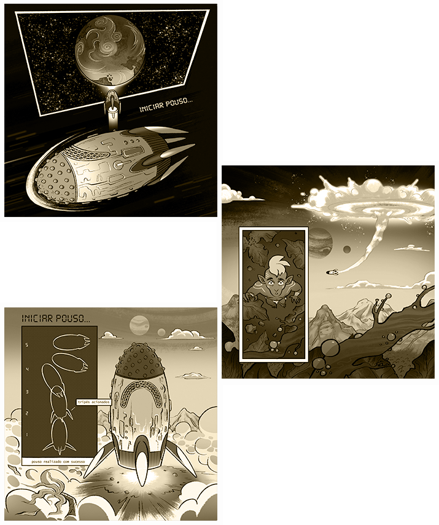

A Chegada
Há muito tempo, os humanos deixaram a Terra, um mundo devastado pela exploração exagerada dos recursos naturais, pelo capitalismo desenfreado e pela busca incessante por poder e riquezas. Fugindo das consequências de suas ações, eles embarcaram em uma jornada através do vasto cosmos, em busca de um novo lar.
Após anos de busca incansável, suas naves espaciais finalmente encontraram um planeta distante e misterioso. Era um mundo repleto de criaturas místicas, paisagens exuberantes e uma energia que pulsava através de cada centímetro do ambiente. Era um lugar de beleza incomparável e possibilidades infinitas. Eles o chamaram de Solara.
Chegando a Solara, os humanos se depararam com uma profusão de seres fantásticos, habitantes nativos do planeta. Dotados de uma sabedoria ancestral, essas criaturas místicas viviam em harmonia com a natureza, protegendo seu lar com amor e respeito.
Movidos por uma mistura de curiosidade, ganância e a crença de que poderiam conquistar novamente o que haviam perdido na Terra, os humanos lançaram-se em uma estratégia astuta.
Munidos de presentes sedutores e promessas vazias de progresso e prosperidade, eles buscaram corromper os seres inocentes de Solara.
Devagar, mas de forma implacável, os humanos implantaram suas práticas capitalistas e valores egoístas no tecido do planeta. Corporações foram estabelecidas, explorando vorazmente os recursos naturais, enquanto espalhavam a semente da ganância e da ambição desmedida.
